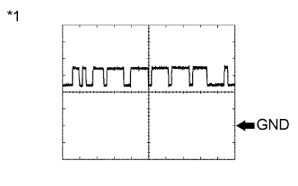

СИСТЕМА РАЗДАТОЧНОЙ КОРОБКИ > КОНТАКТЫ ЭБУ |
| ПРОВЕРЬТЕ ЭБУ ПОЛНОГО ПРИВОДА |
Измерьте напряжение и сопротивление в соответствии со значениями, приведенными в таблице.
| Номера контактов (обозначения) | Цвет проводки | Описание контактов | Условие | Заданные условия |
| G53-1 (HL1) - G54-4 (GND) | GR - W-B | Концевой выключатель привода переключения верхнего/нижнего диапазонов раздаточной коробки | Замок зажигания в положении ON (ВКЛ) Переключатель положения раздаточной коробки в положении H4 | 10,5-14 В |
| Замок зажигания в положении ON (ВКЛ) Переключатель положения раздаточной коробки в положении L4 | Менее 1,5 В | |||
| G53-2 (HL2) - G54-4 (GND) | LG - W-B | Концевой выключатель привода переключения верхнего/нижнего диапазонов раздаточной коробки | Замок зажигания в положении ON (ВКЛ) Переключатель положения раздаточной коробки в положении H4 | Менее 1,5 В |
| Замок зажигания в положении ON (ВКЛ) Переключатель положения раздаточной коробки в положении L4 | 10,5-14 В | |||
| G53-7 (TL2) - G54-4 (GND) | V - W-B | Концевой выключатель привода переключения раздаточной коробки "multimode" | Замок зажигания в положении ON (ВКЛ) Переключатель блокировки межосевого дифференциала в положении блокировки | Менее 1,5 В |
| Замок зажигания в положении ON (ВКЛ) Переключатель блокировки межосевого дифференциала в положении разблокировки | 10,5-14 В | |||
| G53-8 (TL3) - G54-4 (GND) | G - W-B | Концевой выключатель привода переключения раздаточной коробки "multimode" | Замок зажигания в положении ON (ВКЛ) Переключатель блокировки межосевого дифференциала в положении блокировки | 10,5-14 В |
| Замок зажигания в положении ON (ВКЛ) Переключатель блокировки межосевого дифференциала в положении разблокировки | Менее 1,5 В | |||
| G53-13 (LO) - G54-4 (GND) | GR - W-B | Переключатель положения раздаточной коробки | Замок зажигания в положении ON (ВКЛ) Переключатель положения раздаточной коробки в положении H4 | 10,5-14 В |
| Замок зажигания в положении ON (ВКЛ) Переключатель положения раздаточной коробки в положении L4 | Менее 1,5 В | |||
| G53-14 (P1) - G54-4 (GND) | W - W-B | Привод переключения раздаточной коробки "multimode" Датчик положения блокировки межосевого дифференциала | Замок зажигания в положении ON (ВКЛ) Переключатель блокировки межосевого дифференциала в положении разблокировки | 9,5-14 В |
| Замок зажигания в положении ON (ВКЛ) Переключатель блокировки межосевого дифференциала в положении блокировки | Менее 1,5 В | |||
| G53-16 (DL) - G54-4 (GND) | W - W-B | Переключатель блокировки межосевого дифференциала | Замок зажигания в положении ON (ВКЛ) Переключатель блокировки межосевого дифференциала в положении ON (ВКЛ) | Менее 1,5 В |
| Замок зажигания в положении ON (ВКЛ) Переключатель блокировки межосевого дифференциала в положении OFF (ВЫКЛ) | 9,5-14 В | |||
| G53-17 (MTN)*1 - G54-4 (GND) | B - W-B | Пусковой переключатель муфты сцепления | Замок зажигания в положении ON (ВКЛ) Пусковой переключатель муфты сцепления в положении ON (ВКЛ) | Менее 1,5 В |
| Замок зажигания в положении ON (ВКЛ) Пусковой переключатель муфты сцепления в положении OFF (ВЫКЛ) | 9,5-14 В | |||
| G53-19 (CANH) - G54-4 (GND) | G - W-B | Линия передачи данных CAN | Замок зажигания в положении ON (ВКЛ) | Формирование импульсов (см. сигнал 1) |
| G53-20 (CANL) - G54-4 (GND) | W - W-B | Линия передачи данных CAN | Замок зажигания в положении ON (ВКЛ) | Формирование импульсов (см. сигнал 2) |
| G53-21 (L4) - G54-4 (GND) | R - W-B | Сигнал L4 раздаточной коробки | Замок зажигания в положении ON (ВКЛ) Переключатель положения раздаточной коробки в положении H4 | 10-14 В |
| Замок зажигания в положении ON (ВКЛ) Переключатель положения раздаточной коробки в положении L4 | Менее 1,5 В | |||
| G54-2 (HM1) - G54-4 (GND) | B - W-B | Электродвигатель привода переключения верхнего/нижнего диапазонов раздаточной коробки | Замок зажигания в положении ON (ВКЛ) Переключатель положения раздаточной коробки в положении H4 → L4 (электродвигатель привода переключения высшей/низшей передач раздаточной коробки осуществляет переключение с высшей на низшую передачу) | 10-14 В |
| Замок зажигания в положении ON (ВКЛ) Переключатель положения раздаточной коробки в положении H4 → L4 (электродвигатель привода переключения высшей/низшей передач раздаточной коробки остановлен) | Менее 1,5 В | |||
| G54-3 (IG) - G54-4 (GND) | R - W-B | Питание зажигания | Замок зажигания в положении ON (ВКЛ) | 11 - 14 В |
| G54-4 (GND) - масса | W-B - масса | Масса | Всегда | Менее 1 Ом |
| G54-6 (HM2) - G54-4 (GND) | W - W-B | Электродвигатель привода переключения верхнего/нижнего диапазонов раздаточной коробки | Замок зажигания в положении ON (ВКЛ) Переключатель положения раздаточной коробки в положении L4 → H4 (электродвигатель привода переключения высшей/низшей передач раздаточной коробки осуществляет переключение с низшей на высшую передачу) | 10-14 В |
| Замок зажигания в положении ON (ВКЛ) Переключатель положения раздаточной коробки в положении L4 → H4 (электродвигатель привода переключения высшей/низшей передач раздаточной коробки остановлен) | Менее 1,5 В | |||
| G54-7 (TM2) - G54-4 (GND) | V - W-B | Электродвигатель привода переключения раздаточной коробки "multimode" | Замок зажигания в положении ON (ВКЛ) Переключатель блокировки межосевого дифференциала в положении LOCK → FREE (электродвигатель привода переключения раздаточной коробки "multimode" осуществляет выключение блокировки) | 10-14 В |
| Замок зажигания в положении ON (ВКЛ) Переключатель блокировки межосевого дифференциала в положении LOCK → FREE (электродвигатель привода переключения раздаточной коробки "multimode" остановлен) | Менее 1,5 В | |||
| G54-8 (TM1) - G54-4 (GND) | P - W-B | Электродвигатель привода переключения раздаточной коробки "multimode" | Замок зажигания в положении ON (ВКЛ) Переключатель блокировки межосевого дифференциала в положении FREE → LOCK (электродвигатель привода переключения раздаточной коробки "multimode" осуществляет включение блокировки) | 10-14 В |
| Замок зажигания в положении ON (ВКЛ) Переключатель блокировки межосевого дифференциала в положении FREE → LOCK (электродвигатель привода переключения раздаточной коробки "multimode" остановлен) | Менее 1,5 В |
| Номера контактов (обозначения) | Цвет проводки | Описание контактов | Условие | Заданные условия |
| G53-1 (HL1) - G54-4 (GND) | GR - W-B | Концевой выключатель привода переключения верхнего/нижнего диапазонов раздаточной коробки | Замок зажигания в положении ON (ВКЛ) Переключатель положения раздаточной коробки в положении H4F или H4L | 10,5-14 В |
| Замок зажигания в положении ON (ВКЛ) Переключатель положения раздаточной коробки в положении L4L | Менее 1,5 В | |||
| G53-2 (HL2) - G54-4 (GND) | LG - W-B | Концевой выключатель привода переключения верхнего/нижнего диапазонов раздаточной коробки | Замок зажигания в положении ON (ВКЛ) Переключатель положения раздаточной коробки в положении H4F или H4L | Менее 1,5 В |
| Замок зажигания в положении ON (ВКЛ) Переключатель положения раздаточной коробки в положении L4L | 10,5-14 В | |||
| G53-6 (TL1) - G54-4 (GND) | W-B - W-B | Сигнал выбора режима переключателя управления раздаточной коробкой | Всегда | Менее 1 Ом |
| G53-7 (TL2) - G54-4 (GND) | V - W-B | Концевой выключатель привода переключения раздаточной коробки "multimode" | Замок зажигания в положении ON (ВКЛ) Переключатель положения раздаточной коробки в положении H4L или L4L | Менее 1,5 В |
| Замок зажигания в положении ON (ВКЛ) Переключатель положения раздаточной коробки в положении H4F | 10,5-14 В | |||
| G53-8 (TL3) - G54-4 (GND) | G - W-B | Концевой выключатель привода переключения раздаточной коробки "multimode" | Замок зажигания в положении ON (ВКЛ) Переключатель положения раздаточной коробки в положении H4L или L4L | 10,5-14 В |
| Замок зажигания в положении ON (ВКЛ) Переключатель положения раздаточной коробки в положении H4F | Менее 1,5 В | |||
| G53-11 (2-4) - G54-4 (GND) | R - W-B | Переключатель положения раздаточной коробки | Замок зажигания в положении ON (ВКЛ) Переключатель положения раздаточной коробки в положении H4F или H4L | Менее 1,5 В |
| Замок зажигания в положении ON (ВКЛ) Переключатель положения раздаточной коробки в положении L4L | 10,5-14 В | |||
| G53-13 (LO) - G54-4 (GND) | GR - W-B | Переключатель положения раздаточной коробки | Замок зажигания в положении ON (ВКЛ) Переключатель положения раздаточной коробки в положении H4F | 10,5-14 В |
| Замок зажигания в положении ON (ВКЛ) Переключатель положения раздаточной коробки в положении H4L или L4L | Менее 1,5 В | |||
| G53-14 (P1) - G54-4 (GND) | W - W-B | Привод переключения раздаточной коробки "multimode" Датчик положения блокировки межосевого дифференциала | Замок зажигания в положении ON (ВКЛ) Переключатель положения раздаточной коробки в положении H4F | 9,5-14 В |
| Замок зажигания в положении ON (ВКЛ) Переключатель положения раздаточной коробки в положении H4L или L4L | Менее 1,5 В | |||
| G53-17 (MTN)*1 - G54-4 (GND) | B - W-B | Пусковой переключатель муфты сцепления | Замок зажигания в положении ON (ВКЛ) Пусковой переключатель муфты сцепления в положении ON (ВКЛ) | Менее 1,5 В |
| Замок зажигания в положении ON (ВКЛ) Пусковой переключатель муфты сцепления в положении OFF (ВЫКЛ) | 9,5-14 В | |||
| G53-19 (CANH) - G54-4 (GND) | G - W-B | Линия передачи данных CAN | Замок зажигания в положении ON (ВКЛ) | Формирование импульсов (см. сигнал 1) |
| G53-20 (CANL) - G54-4 (GND) | W - W-B | Линия передачи данных CAN | Замок зажигания в положении ON (ВКЛ) | Формирование импульсов (см. сигнал 2) |
| G53-21 (L4) - G54-4 (GND) | R - W-B | Сигнал L4 раздаточной коробки | Замок зажигания в положении ON (ВКЛ) Переключатель положения раздаточной коробки в положении H4F или H4L | 10-14 В |
| Замок зажигания в положении ON (ВКЛ) Переключатель положения раздаточной коробки в положении L4L | Менее 1,5 В | |||
| G54-2 (HM1) - G54-4 (GND) | B - W-B | Электродвигатель привода переключения верхнего/нижнего диапазонов раздаточной коробки | Замок зажигания в положении ON (ВКЛ) Переключатель положения раздаточной коробки в положении H4L → L4L (электродвигатель привода переключения высшей/низшей передач раздаточной коробки осуществляет переключение с высшей на низшую передачу) | 10-14 В |
| Замок зажигания в положении ON (ВКЛ) Переключатель положения раздаточной коробки в положении H4L → L4L (электродвигатель привода переключения высшей/низшей передач раздаточной коробки остановлен) | Менее 1,5 В | |||
| G54-3 (IG) - G54-4 (GND) | R - W-B | Питание зажигания | Замок зажигания в положении ON (ВКЛ) | 11 - 14 В |
| G54-4 (GND) - масса | W-B - масса | Масса | Всегда | Менее 1 Ом |
| G54-6 (HM2) - G54-4 (GND) | W - W-B | Электродвигатель привода переключения верхнего/нижнего диапазонов раздаточной коробки | Замок зажигания в положении ON (ВКЛ) Переключатель положения раздаточной коробки в положении L4L → H4L (электродвигатель привода переключения высшей/низшей передач раздаточной коробки осуществляет переключение с низшей на высшую передачу) | 10-14 В |
| Замок зажигания в положении ON (ВКЛ) Переключатель положения раздаточной коробки в положении L4L → H4L (электродвигатель привода переключения высшей/низшей передач раздаточной коробки остановлен) | Менее 1,5 В | |||
| G54-7 (TM2) - G54-4 (GND) | V - W-B | Электродвигатель привода переключения раздаточной коробки "multimode" | Замок зажигания в положении ON (ВКЛ) Переключатель положения раздаточной коробки в положении H4L → H4F (электродвигатель привода переключения раздаточной коробки "multimode" осуществляет выключение блокировки) | 10-14 В |
| Замок зажигания в положении ON (ВКЛ) Переключатель положения раздаточной коробки в положении H4L → H4F (электродвигатель привода переключения раздаточной коробки "multimode" остановлен) | Менее 1,5 В | |||
| G54-8 (TM1) - G54-4 (GND) | P - W-B | Электродвигатель привода переключения раздаточной коробки "multimode" | Замок зажигания в положении ON (ВКЛ) Переключатель положения раздаточной коробки в положении H4F → H4L (электродвигатель привода переключения раздаточной коробки "multimode" осуществляет включение блокировки) | 10-14 В |
| Замок зажигания в положении ON (ВКЛ) Переключатель положения раздаточной коробки в положении H4F → H4L (электродвигатель привода переключения раздаточной коробки "multimode" остановлен) | Менее 1,5 В |
|  |
С помощью осциллографа проверьте форму сигнала 1.
| Позиция | Описание |
| Номера контактов (обозначения) | G53-19 (CANH) - G54-4 (GND) |
| Настройки прибора | 1 В / дел., 10 мкс / дел. |
| Условие | Двигатель остановлен, замок зажигания в положении ON (ВКЛ) |
| *1 | Осциллограмма 1 |
 |
С помощью осциллографа проверьте форму сигнала 2.
| Позиция | Описание |
| Номера контактов (обозначения) | G53-20 (CANL) - G54-4 (GND) |
| Настройки прибора | 1 В / дел., 10 мкс / дел. |
| Условие | Двигатель остановлен, замок зажигания в положении ON (ВКЛ) |
| *1 | Осциллограмма 2 |